CAMBRIDGE POKER HELP CENTER
GROUND RULES FOR THE BEST ZOOM EXPERIENCE:
- Your camera should always show your (poker) face on the screen
- 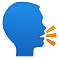Always say out loud what you are doing, along with clicking things
("Check", "Fold" "I'm in!", "Raise a buck", "Call" "I'll take 3")
IMPORTANT CP REMINDERS:
- FEATURE REMINDERS:
DEALER:
- can click Backs button for different card backgrounds
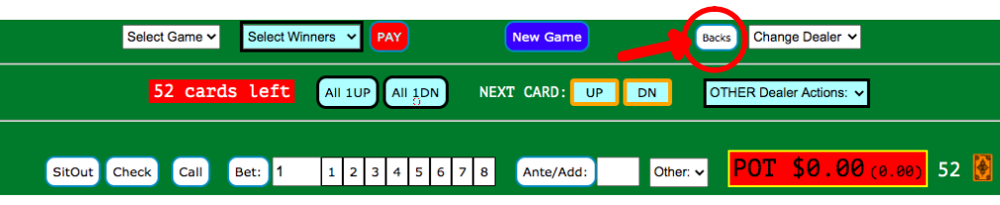
- can Undo the last action or reset the entire current game (with caution!)
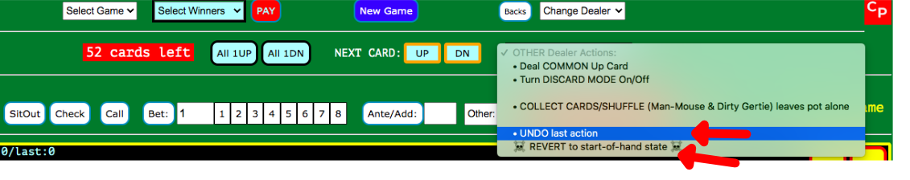
PLAYERS:
- for betting, you can use the 1-8 buttons OR hit the bet button for 1 chip or use the bet button for any other number (enter in box)
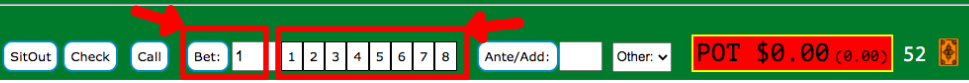
- CALL is the easier than selecting the amount you are shy
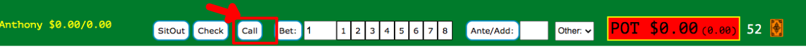
- clicking the ANTE/PAY button will ante 1 OR you can enter any amount you want
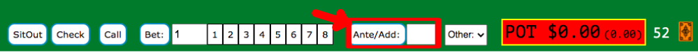
- also use ANTE/PAY for putting any amount in the pot that doesn't make others shy that amount, for any reason
- players can select to see just their name, their name with $, or their name with $ and buy-in $
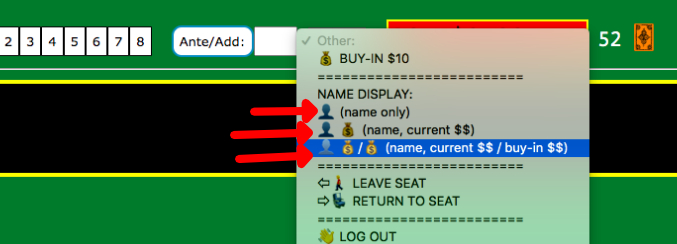 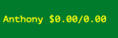
- GETTING UP FROM YOUR SEAT:
- if you're out of the current hand and need to get up and you don't know for how long, use the "Leave Seat" option in the Action menu (you'll be sat out when the next game gets dealt, so everyone else isn't stuck with you still in the game, but not present)
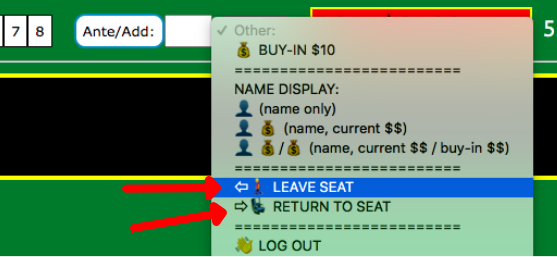
- PREVENTING DEALER MISTAKES:
- In Woolworths, if a 4, 5, or 10 comes up, or in Acey-Ducey if you deal an Ace as the first card, you will need to click the CONFIRM Card button to deal the next card
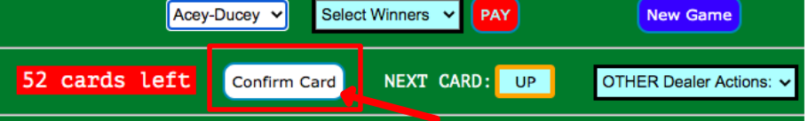
- to select the active player (black background) click anywhere to the left of their cards
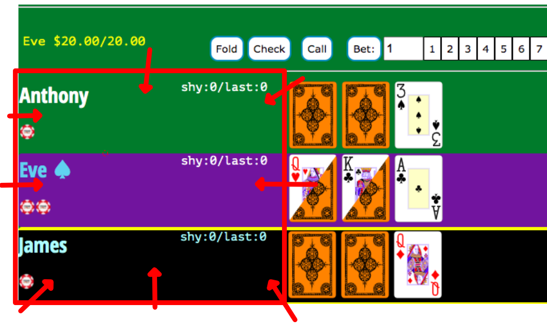
- PREVENTING PLAYER MISTAKES:
- You'll need to double-click to flip a down card or discard a card